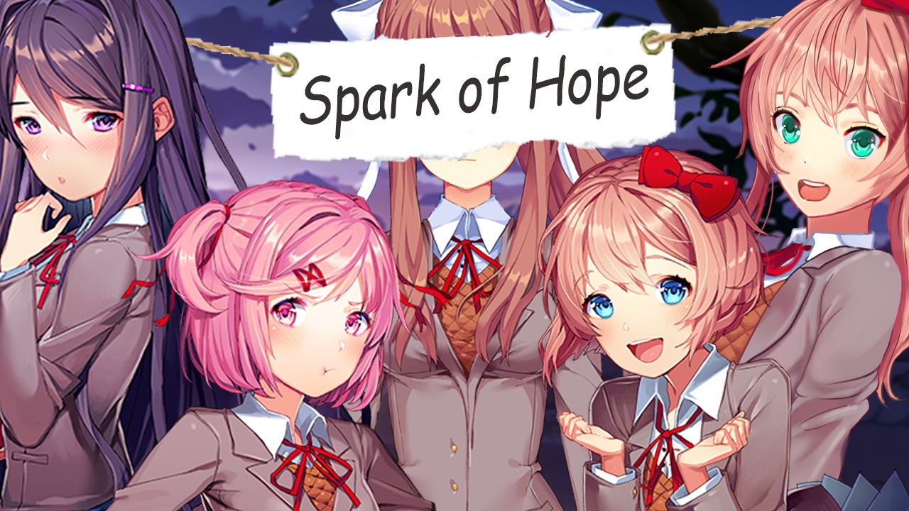

DDLC Spark Of Hope
O MC se encontra em um vazio onde ele percebe que pode haver felicidade neste mundo, no entanto, ele não pode fazer isto sem as garotas. Ele vai longe para trazer Monika de volta e a convence a restaurar o jogo, mas há um custo. As outras lembram exatamente sobre oque aconteceu no passado; depende de você corrigir as coisas novamente. Você será capaz de reconstruir a amizade que eles tinham antes ou tudo será horrível como o passado?
⬇ Download